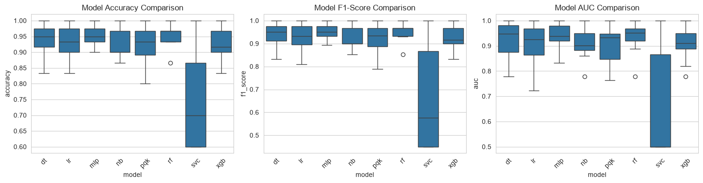
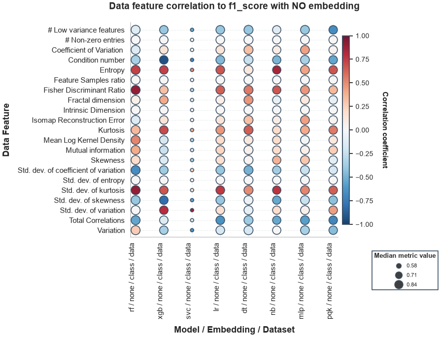
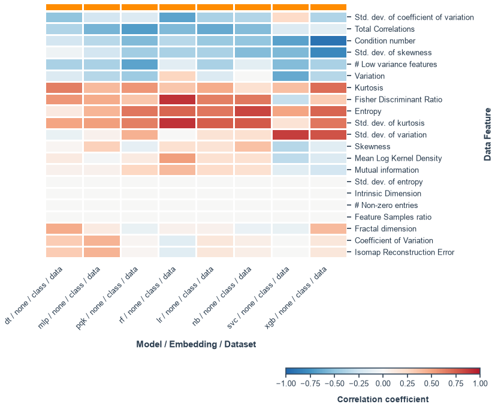
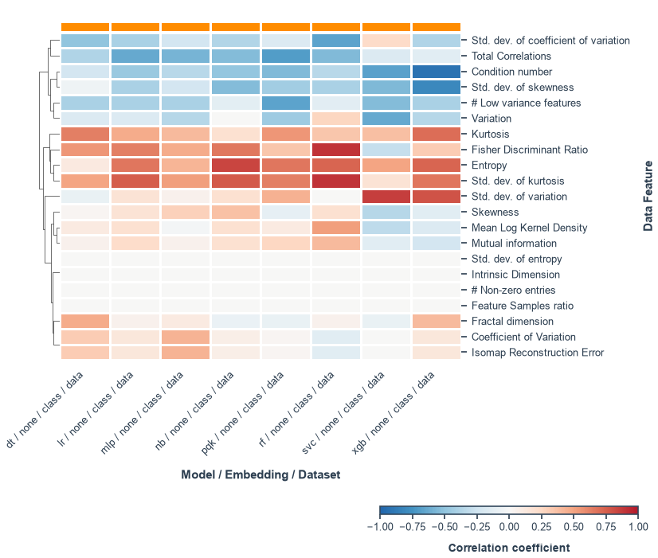
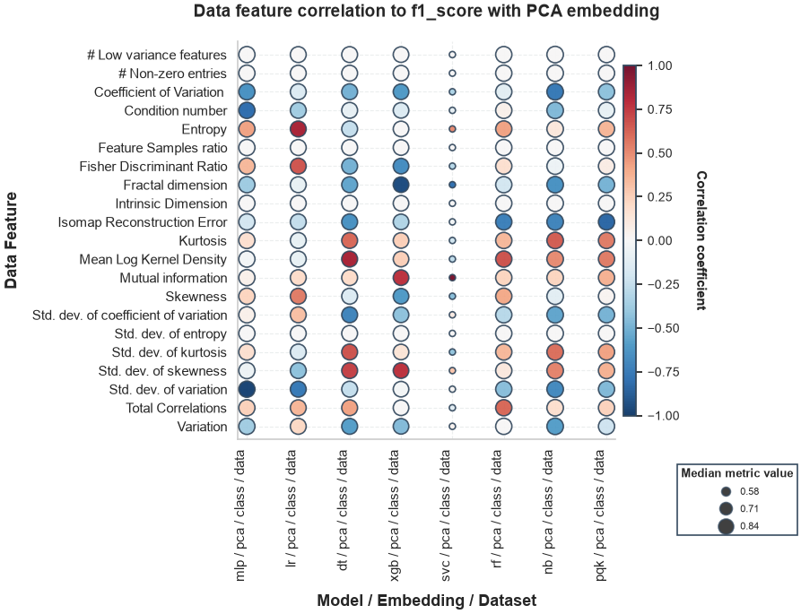
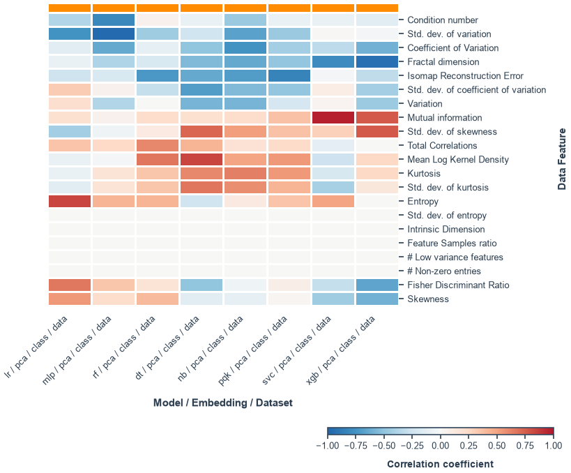
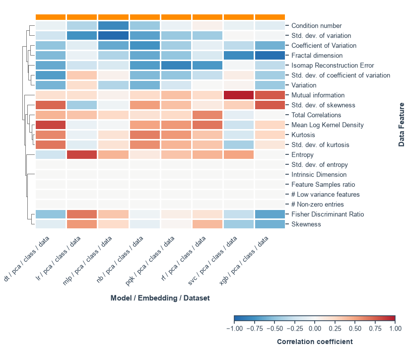

QProfiler Tutorial#
This tutorial demonstrates how to use QProfiler to benchmark machine learning models and analyze data complexity.
What is QProfiler?#
QProfiler is an automated ML benchmarking tool that provides:
Model Performance Evaluation: Tests both classical and quantum ML algorithms
Data Complexity Analysis: Computes 15+ intrinsic dataset characteristics
Correlation Analysis: Links model performance to data properties
Automated Workflows: Handles data splitting, scaling, and evaluation
1. Setup and Imports#
[1]:
import sys
import os
import re
import pandas as pd
# Import QBioCode
import qbiocode as qbc
# For running QProfiler
import yaml
<env>/lib/python3.12/site-packages/tqdm/auto.py:21: TqdmWarning: IProgress not found. Please update jupyter and ipywidgets. See https://ipywidgets.readthedocs.io/en/stable/user_install.html
from .autonotebook import tqdm as notebook_tqdm
2. Generate Test Data#
We’ll create simple artificial datasets to demonstrate QProfiler’s capabilities.
[2]:
type_of_data = 'classes'
N_SAMPLES = [100]
N_FEATURES = [10]
N_INFORMATIVE = [2]
N_REDUNDANT = [2]
N_CLASSES = [2]
N_CLUSTERS_PER_CLASS = [2]
WEIGHTS = [[0.3, 0.7], [0.4, 0.6], [0.5, 0.5]]
qbc.generate_data(
type_of_data=type_of_data,
save_path=os.path.join('data', 'ld_data'),
n_samples=N_SAMPLES,
n_features=N_FEATURES,
n_informative=N_INFORMATIVE,
n_redundant=N_REDUNDANT,
n_classes=N_CLASSES,
n_clusters_per_class=N_CLUSTERS_PER_CLASS,
weights=WEIGHTS,
random_state=42
)
print(f"Generated {len(WEIGHTS)} datasets in data/ld_data/")
Generating classes dataset...
Dataset generation complete.
Generated 3 datasets in data/ld_data/
3. Configure QProfiler#
QProfiler uses a YAML configuration file (configs/config.yaml) to specify:
Data directories
Models to test (RF, SVC, LR, DT, NB, MLP, QSVC, PQK, VQC, QNN)
Embeddings (none, pca, lle, isomap, spectral, umap, nmf)
Output settings
4. Run QProfiler#
Option 1: Command Line#
qprofiler --config configs/config.yaml
Option 2: Python API#
[3]:
# Load configuration
config = yaml.safe_load(open('configs/config.yaml', 'r'))
# Import QProfiler
from qbiocode.apps.qprofiler import qprofiler as profiler
# Run QProfiler
profiler.main(config)
print("QProfiler execution complete!")
print("Results saved to:")
print(" - ModelResults.csv")
print(" - RawDataEvaluation.csv")
Processing file: class_data-1.csv
at datapoint 0
at datapoint 0
at datapoint 0
at datapoint 0
at datapoint 0
at datapoint 0
at datapoint 0
at datapoint 0
Processing file: class_data-2.csv
at datapoint 0
at datapoint 0
at datapoint 0
at datapoint 0
at datapoint 0
at datapoint 0
at datapoint 0
at datapoint 0
Processing file: class_data-3.csv
at datapoint 0
at datapoint 0
at datapoint 0
at datapoint 0
at datapoint 0
at datapoint 0
at datapoint 0
at datapoint 0
QProfiler execution complete!
Results saved to:
- ModelResults.csv
- RawDataEvaluation.csv
5. Analyze Results#
QProfiler generates two main output files:
ModelResults.csv: Performance metrics (accuracy, F1-score, AUC, etc.)
RawDataEvaluation.csv: Data complexity metrics
[4]:
# Load model results
model_results = pd.read_csv('ModelResults.csv')
print("Model Performance Results:")
print(model_results[['model', 'accuracy', 'f1_score', 'auc']].head())
# Load data complexity metrics
data_eval = pd.read_csv('RawDataEvaluation.csv')
print("\nData Complexity Metrics:")
print(data_eval.columns.tolist())
Model Performance Results:
model accuracy f1_score auc
0 dt 0.966667 0.967137 0.976190
1 lr 0.933333 0.930682 0.888889
2 mlp 0.966667 0.966074 0.944444
3 nb 0.900000 0.898222 0.865079
4 pqk 0.900000 0.898222 0.865079
Data Complexity Metrics:
['Dataset', '# Features', '# Samples', 'Feature_Samples_ratio', 'Intrinsic_Dimension', 'Condition number', 'Fisher Discriminant Ratio', 'Total Correlations', 'Mutual information', '# Non-zero entries', '# Low variance features', 'Variation', 'std_var', 'Coefficient of Variation %', 'std_co_of_v', 'Skewness', 'std_skew', 'Kurtosis', 'std_kurt', 'Mean Log Kernel Density', 'Isomap Reconstruction Error', 'Fractal dimension', 'Entropy', 'std_entropy']
6. Visualize Results#
[5]:
import matplotlib.pyplot as plt
import seaborn as sns
# Set style
sns.set_style("whitegrid")
# Plot model comparison
fig, axes = plt.subplots(1, 3, figsize=(15, 4))
# Accuracy comparison
sns.boxplot(data=model_results, x='model', y='accuracy', ax=axes[0])
axes[0].set_title('Model Accuracy Comparison')
axes[0].tick_params(axis='x', rotation=45)
# F1-score comparison
sns.boxplot(data=model_results, x='model', y='f1_score', ax=axes[1])
axes[1].set_title('Model F1-Score Comparison')
axes[1].tick_params(axis='x', rotation=45)
# AUC comparison
sns.boxplot(data=model_results, x='model', y='auc', ax=axes[2])
axes[2].set_title('Model AUC Comparison')
axes[2].tick_params(axis='x', rotation=45)
plt.tight_layout()
plt.show()

7. Correlation Analysis#
Analyze correlations between data complexity metrics and model performance for all embedding types.
[6]:
# Use compiled results if available, otherwise use current results
compiled = pd.read_csv('ModelResults.csv')
# Compute correlation
_, correlation_spearman_df = qbc.compute_results_correlation(
results_df=compiled,
correlation='spearman',
thresh=0.7
)
# Get unique embedding types from the data
unique_embeddings = compiled['embeddings'].unique()
print(f"Found {len(unique_embeddings)} unique embedding types: {list(unique_embeddings)}")
# Plot correlation for each embedding type
figsize = (9, 7)
metrics = ['f1_score'] # Can add more: ['f1_score', 'accuracy', 'auc']
for m in metrics:
for embedding in unique_embeddings:
# Filter data for this embedding type
embedding_data = correlation_spearman_df[
correlation_spearman_df['model_embed_datatype'].str.contains(f'_{embedding}_')
]
if len(embedding_data) > 0:
# Create title based on embedding type
if embedding == 'none':
title = f'Data feature correlation to {m} with NO embedding'
else:
title = f'Data feature correlation to {m} with {embedding.upper()} embedding'
# Plot correlation
qbc.plot_results_correlation(
embedding_data,
metric=m,
title=title,
correlation_type=f'Color: Spearman;\nSize: {m}',
size='median_metric',
figsize=figsize
)
else:
print(f"No data found for embedding: {embedding}")
Found 2 unique embedding types: ['none', 'pca']






8. Understanding Data Complexity Metrics#
Geometric Properties:#
Intrinsic Dimension: True dimensionality of data
Fractal Dimension: Measures self-similarity and complexity
Statistical Properties:#
Variance: Data spread across features
Skewness: Distribution asymmetry
Kurtosis: Tail heaviness
Separability Measures:#
Fisher Discriminant Ratio: Class separability (higher = more separable)
Mutual Information: Feature-label dependence
[7]:
# Examine data complexity
print("Data Complexity Summary:")
print(data_eval[[
'Dataset',
'Intrinsic_Dimension',
'Fractal dimension',
'Fisher Discriminant Ratio'
]].head())
Data Complexity Summary:
Dataset Intrinsic_Dimension Fractal dimension \
0 class_data-1.csv 8 1.997569
1 class_data-2.csv 8 1.997571
2 class_data-3.csv 8 1.997572
Fisher Discriminant Ratio
0 0.413257
1 0.470445
2 0.500925
Summary#
In this tutorial, you learned how to:
✅ Generate artificial datasets for testing
✅ Configure QProfiler with YAML files
✅ Run QProfiler to benchmark multiple ML models
✅ Analyze model performance results
✅ Visualize and compare model performance
✅ Understand data complexity metrics
✅ Correlate data properties with model performance across all embeddings
Next Steps#
Try different datasets: Use your own data or generate more complex artificial datasets
Experiment with embeddings: Test different dimensionality reduction methods
Quantum models: If you have access to quantum hardware, try QSVC, PQK, VQC
Batch processing: Run QProfiler on multiple datasets using bash loops or SLURM
Use with QSage: Compile results and train QSage for model recommendations
See Also#
QProfiler Documentation - Full configuration reference
QSage Tutorial - Use compiled results for meta-learning
Data Generation Tutorial - Create more datasets